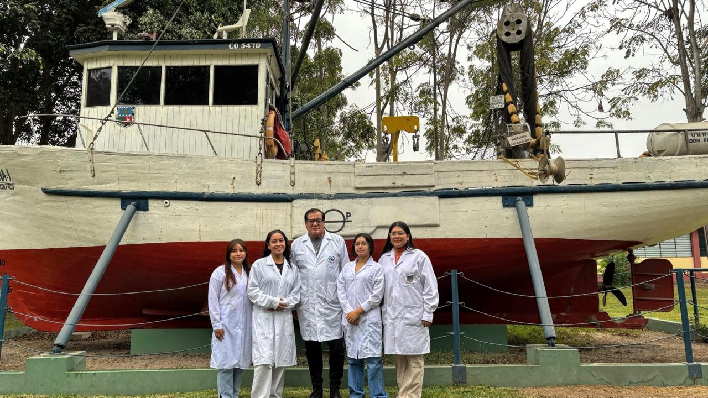
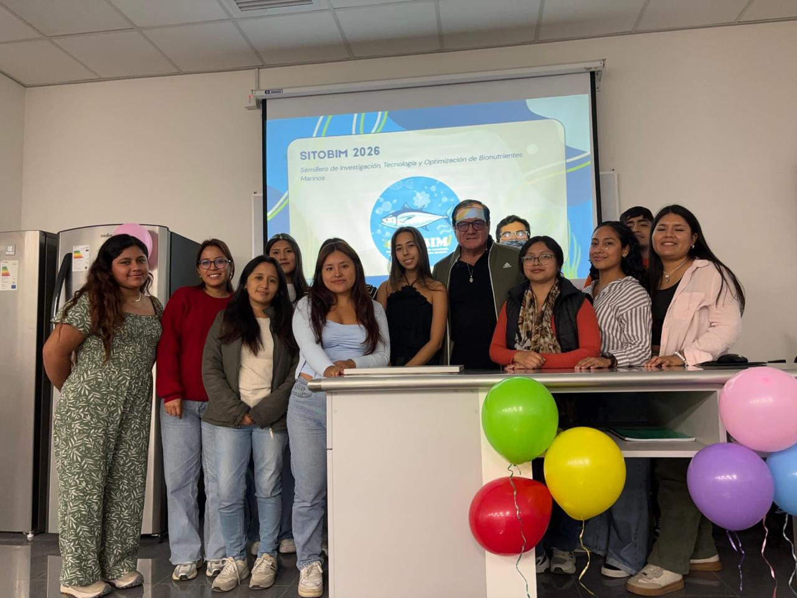
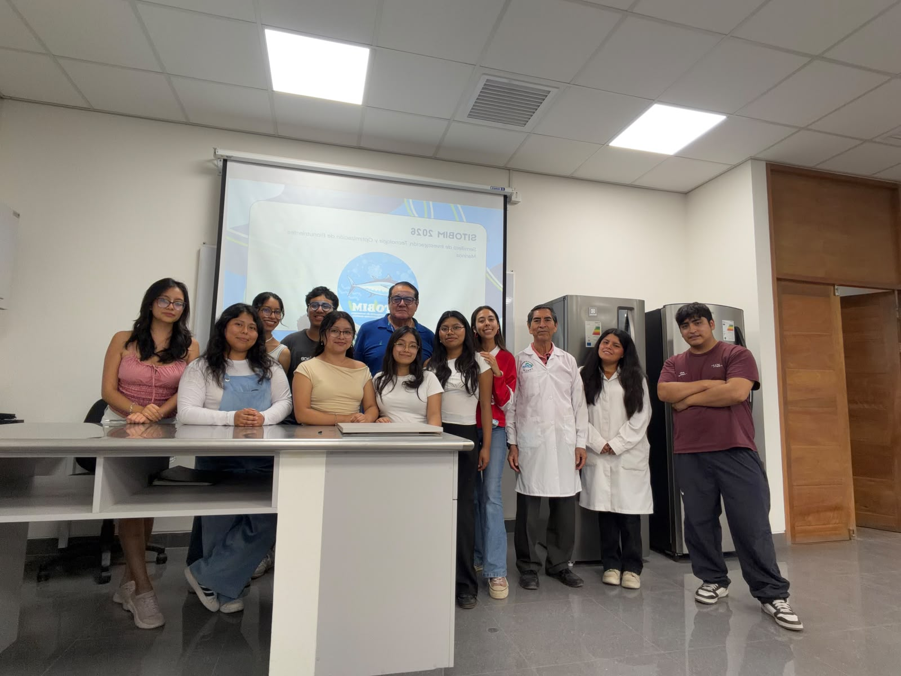
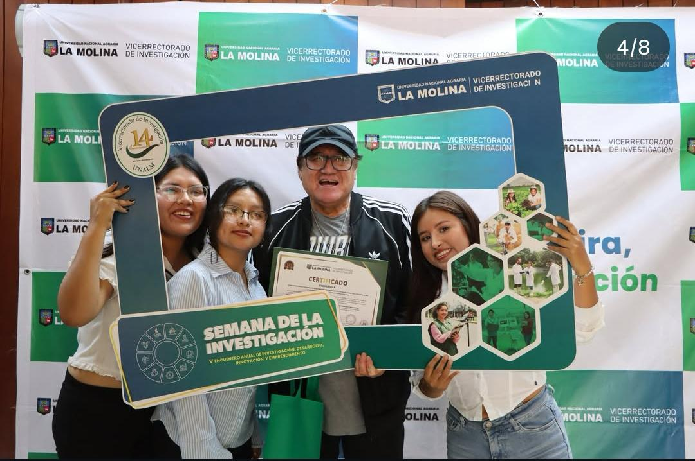
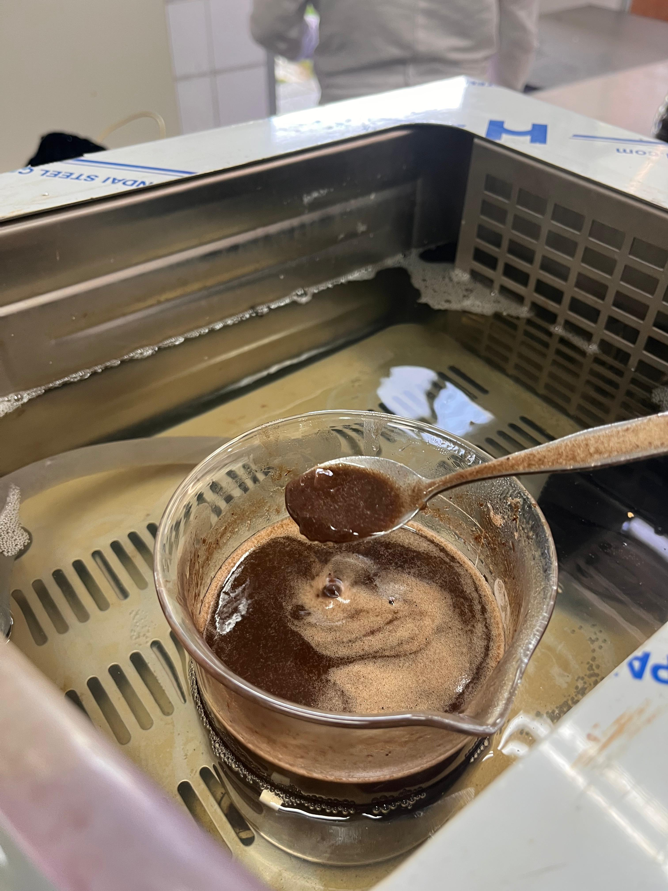
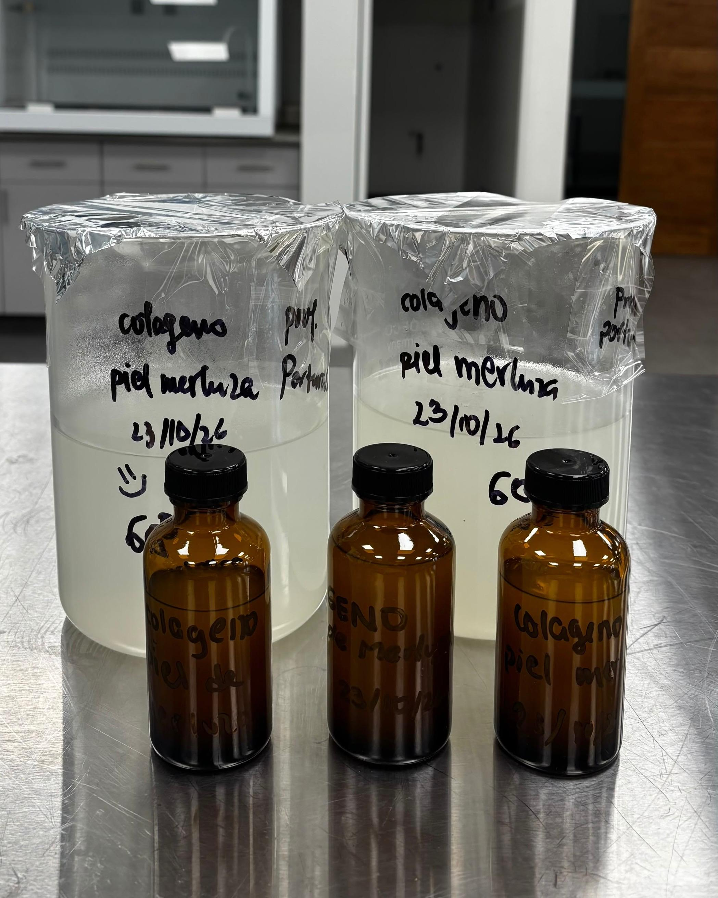

"Empieza tu camino en la investigación"
Haz ciencia que genere impacto en bionutrientes marinos, optimización de procesos y biotecnología aplicada.
¿Quiénes Somos?
SITOBIM (Semillero de Investigación, Tecnología y Optimización de Bionutrientes Marinos) pertenece a la Facultad de Pesquería de la Universidad Nacional Agraria La Molina (UNALM). Somos una comunidad académica conformada por estudiantes enfocados en la investigación científica, el desarrollo tecnológico y el aprovechamiento sostenible de los recursos hidrobiológicos.
Misión
Contribuir al desarrollo de tecnologías sostenibles mediante la investigación aplicada de recursos marinos y productos hidrobiológicos, promoviendo su valorización en alimentos, suplementos y bioproductos de alto valor agregado, fomentando la formación científica, la seguridad alimentaria y la economía circular.
Visión
Ser un semillero universitario referente en investigación científica aplicada al uso sostenible de los recursos marinos, destacando por la generación de conocimiento útil, la formación de estudiantes investigadores y el desarrollo de proyectos innovadores con enfoque técnico, ambiental y social.
Docente Asesor y Equipo
Nuestra comunidad académica en la Facultad de Pesquería – UNALM




Prof. Raul Del Carmen Porturas Olaechea
Facultad de Pesquería – UNALM
Perfil
Docente investigador de la Facultad de Pesquería de la UNALM, especialista en tecnología pesquera, evaluación sensorial, caracterización fisicoquímica y aprovechamiento integral de recursos hidrobiológicos.
Áreas de especialidad
Rol en SITOBIM
Guía científica y metodológica del semillero.
Líneas de Investigación y Desarrollo
Conoce las áreas que orientan nuestro trabajo en investigación, análisis, optimización y valorización de recursos hidrobiológicos.
Bionutrientes Marinos
Investigación y caracterización de componentes nutricionales y funcionales presentes en recursos hidrobiológicos, como proteínas, péptidos, hidrolizados, lípidos y compuestos bioactivos.
Optimización de Procesos
Evaluación y mejora de las condiciones de procesamiento para optimizar el aprovechamiento, transformación y valorización de recursos hidrobiológicos y sus componentes de interés.
Análisis Químico
Caracterización de materias primas, fracciones, hidrolizados y productos mediante análisis químicos y fisicoquímicos para conocer su composición y propiedades.
Tecnología de Recursos Hidrobiológicos
Desarrollo y evaluación de procesos para el aprovechamiento, transformación, conservación y valorización integral de recursos hidrobiológicos y sus subproductos.
Biotecnología Aplicada
Aplicación de procesos biológicos y enzimáticos para la transformación de materias primas, obtención de hidrolizados y aprovechamiento de compuestos de interés.
Divulgación Científica y Noticias
Avances, hallazgos y novedades de la ciencia marina al alcance de todos
Evaluación Antioxidante DPPH y ABTS en Hidrolizados
Investigadores del semillero analizan la capacidad captadora de radicales libres de péptidos marinos obtenidos por hidrólisis enzimática.
Identificación de Microplásticos en Organismos Marinos
Metodologías de aislamiento e identificación espectroscópica aplicadas al estudio de microplásticos en especies locales.

Divulgación Científica • Proyecto UNALMValorización de Vísceras de Jurel (Trachurus murphyi) mediante Hidrólisis Enzimática con Alcalase
Avance del proyecto de investigación enfocado en transformar subproductos pesqueros descartados en un hidrolizado proteico líquido de alto valor nutricional bajo un enfoque de economía circular.
Infografías Educativas y "Sabías Que..."
Aprende conceptos científicos clave de forma visual e interactiva
Enzimas Bioactivas y la Presión Arterial
Los hidrolizados de proteína marina contienen péptidos inhibidores de la ECA (Enzima Convertidora de Angiotensina), los cuales ayudan a regular la presión arterial de forma natural.
Paso a Paso: Extracción HPLC y GC-FID
Guía infográfica sobre cómo preparar muestras lipídicas y proteicas para su cuantificación en Cromatografía Líquida y de Gases.
Biblioteca de Saberes para Estudiantes
Módulos de formación clave para potenciar tu perfil científico
Química Analítica de Compuestos Marinos
Aprende sobre la separación de perfil de ácidos grasos (Omega-3, EPA, DHA) utilizando GC-FID y caracterización cromatográfica.
Nivel: IntermedioEnsayos de Capacidad Antioxidante
Aprende la teoría detrás de los ensayos espectrofotométricos DPPH, ABTS y su expresión en equivalentes Trolox.
Nivel: Básico - IntermedioGuías y Protocolos de Laboratorio
Descarga protocolos estandarizados para tus prácticas de investigación
Guía No. 01: Protocolo de Hidrólisis Enzimática con Alcalase 2.4L
Formato PDF • Actualizado 2026
Guía No. 02: Aislamiento e Identificación de Microplásticos en Matriz Marina
Formato PDF • Actualizado 2026
Proyectos de Investigación Realizados
Investigación aplicada con sello de innovación y rigor científico
Obtención y Caracterización de Bionutrientes a partir de Residuos Marinos
Proyecto enfocado en la revalorización de subproductos marinos para la extracción de péptidos con actividad antioxidante e inhibidora de la ECA.
Talleres y Capacitaciones
Actividades prácticas, experimentales y seminarios de laboratorio
 Experimental
Experimental
Caracterización y análisis proximal de Jurel (Trachurus murphyi)
Actividad práctica y experimental orientada al análisis proximal y caracterización física de muestras pesqueras para evaluar su valor nutricional.

Biopolímeros MarinosExtracción de Colágeno Comestible a partir de Piel de Merluza (Merluccius gayi peruanus)
Obtención de colágeno y gelatina de grado alimentario mediante extracción térmica controlada y acidulación suave, aprovechando pieles de merluza sin el uso de reactivos químicos tóxicos.
Caracterización y análisis proximal de Jurel (Trachurus murphyi)
Fecha de ejecución: 09/04/2026
Objetivo
Realizar la caracterización física y el análisis proximal de un ejemplar de jurel, mediante la medición de sus características iniciales y la evaluación de sus principales componentes nutricionales, con la finalidad de obtener información que contribuya al estudio y aprovechamiento de los recursos pesqueros.
Descripción de la actividad
Se desarrolló una actividad práctica utilizando como muestra un ejemplar de jurel. Antes de iniciar el procedimiento de análisis, se realizó la caracterización inicial del pescado mediante su pesado y medición, registrando sus características físicas.
Posteriormente, se procedió a la preparación de la muestra para su análisis, considerando las diferentes partes que conforman el pescado entero, como cabeza, piel, músculo y vísceras. Finalmente, se realizaron procedimientos correspondientes al análisis proximal para la determinación de componentes de interés (humedad, proteínas, grasas y cenizas).
Resultados Principales
- 1. Pesado y medición inicial del ejemplar previo al procesamiento.
- 2. Acondicionamiento e identificación de las partes del pescado.
- 3. Aplicación práctica del protocolo de análisis proximal.
- 4. Fortalecimiento de competencias en manejo de muestras pesqueras.
- 5. Generación de datos de composición como base para futuras investigaciones.
Extracción de Colágeno Comestible a partir de Piel de Merluza (Merluccius gayi peruanus)
De descarte industrial a biopolímero de alta pureza
En la industria pesquera, las pieles de pescado suelen desecharse. En SITOBIM mostramos cómo la ciencia puede transformar ese subproducto en colágeno y gelatina de grado alimentario, sin químicos agresivos ni disolventes tóxicos, priorizando la inocuidad y la economía circular.
Una técnica limpia y controlada
Se combina una acidulación natural suave (jugo de limón o vinagre) con un estricto control de temperatura (60 °C a 70 °C). Así se abre la triple hélice del colágeno sin degradarlo, y se obtiene una matriz gelificable útil para la industria de alimentos y cosmética.
Objetivo y fundamento
Obtener colágeno hidrolizado y gelatina de grado alimentario mediante desnaturalización térmica controlada asistida por acidulación natural suave. El protocolo prioriza la inocuidad alimentaria al eliminar disolventes orgánicos y reactivos tóxicos, y aprovecha la matriz tisular de la piel limpia de merluza para obtener una solución gelificable de alta pureza.
Insumos y materiales empleados
Piel de merluza fresca (libre de escamas y restos musculares), agua purificada o destilada y acidulante natural (jugo de limón filtrado o vinagre blanco comestible).
Balanza de precisión, recipiente de acero inoxidable o vaso de precipitado, baño María con control termostático, termómetro de vástago, colador de malla fina con gasa estéril o tela tocuyo y moldes para gelificación.
Procedimiento paso a paso
-
1
Pesaje y acondicionamiento. Lavado de la piel con agua fría para retirar impurezas superficiales y corte en trozos homogéneos de 0.5 × 0.5 cm, para aumentar la superficie de contacto y facilitar la transferencia térmica.
-
2
Mezcla y acidulación natural. Inmersión completa de los trozos en agua purificada acidificada suavemente con jugo de limón filtrado (o vinagre blanco) para ajustar el pH y favorecer la apertura de los enlaces del colágeno.
-
3
Extracción térmica controlada. Calentamiento en baño María entre 60 °C y 70 °C durante 1.5 a 2 horas, con agitación suave y ocasional para solubilizar el colágeno sin degradar térmicamente las proteínas.
-
4
Filtración en caliente. Retiro de la fuente de calor y filtración inmediata a través de tela tocuyo o gasa estéril sobre malla fina, para recolectar el líquido clarificado libre de residuos sólidos.
-
5
Moldeo y gelificación. Trasvase a moldes, reposo a temperatura ambiente hasta alcanzar ~25 °C y refrigeración a 4 °C durante 3 a 4 horas, hasta completar la gelificación y obtener una consistencia firme.
Valorización de Vísceras de Jurel (Trachurus murphyi) mediante Hidrólisis Enzimática con Alcalase
Revalorizando el mar peruano desde la raíz
El jurel (Trachurus murphyi) es uno de los recursos más importantes del Pacífico Sur, pero su procesamiento genera grandes volúmenes de vísceras que tradicionalmente se descartan. Este proyecto convierte esos residuos en un hidrolizado líquido rico en péptidos y aminoácidos, con potencial aplicación alimentaria.
Contexto e impacto: economía circular
El descarte de vísceras en el procesamiento del jurel representa una problemática ambiental y una pérdida de biomasa rica en nutrientes. Este proyecto, financiado en el XV Concurso de Círculos de Investigación de la UNALM, propone aprovechar estos subproductos mediante biocatálisis enzimática controlada para obtener un ingrediente proteico marino.
El valor científico
La enzima Alcalase permite una hidrólisis controlada que rompe proteínas complejas en cadenas cortas (péptidos y aminoácidos libres), lo que favorece que los nutrientes sean más absorbibles y funcionales. Todo se respalda con análisis fisicoquímicos bajo métodos oficiales AOAC.
Objetivo general
Obtener y caracterizar un hidrolizado proteico a partir de vísceras de jurel mediante hidrólisis enzimática con la proteasa Alcalase, evaluando la calidad inicial de la materia prima, la composición proximal y el perfil de aminoácidos del producto resultante.
Metodología general: 4 fases ejecutadas
Materia prima y fraccionamiento
Control de frescura mediante análisis sensorial descriptivo (Tabla de Wittfogel), registro morfométrico, determinación macroscópica de madurez sexual y separación anatómica de fracciones (cabeza, agallas, gónadas y vísceras).
Hidrólisis enzimática controlada
Procesamiento de las vísceras acondicionadas con la enzima proteolítica Alcalase en baño María bajo condiciones térmicas controladas, con monitoreo cinético continuo de sólidos solubles (°Brix) mediante refractometría.
Estabilización y evaluación térmica
División del hidrolizado en dos tratamientos (con y sin pasteurización térmica), conservados en refrigeración para evaluar la estabilidad del producto.
Caracterización fisicoquímica y nutricional
Composición proximal (humedad, cenizas, proteína bruta por Semi-micro Kjeldahl y grasa total por Soxhlet, bajo métodos oficiales AOAC) y perfil de aminoácidos (aminograma) para validar su calidad biológica frente a proteínas de referencia.
Equipo ejecutor
Docente Asesor: Prof. Raul Del Carmen Porturas Olaechea
Evaluación Antioxidante DPPH y ABTS en Hidrolizados Enzimáticos
La generación de radicales libres y el estrés oxidativo son factores determinantes en el deterioro celular. En las investigaciones llevadas a cabo por SITOBIM, se evaluaron hidrolizados proteicos marinos obtenidos mediante la enzima Alcalase 2.4L.
Los resultados mostraron una capacidad de atrapamiento de radicales libres superior al 75% en ensayos de DPPH y ABTS, expresando la actividad antioxidante en micromoles equivalentes de Trolox por gramo de muestra.
Infografía: Inhibición de la Enzima ECA
¿Cómo funcionan los péptidos marinos?
1. La Enzima Convertidora de Angiotensina (ECA) transforma la angiotensina I en angiotensina II, lo que causa vasoconstricción y eleva la presión arterial.
2. Los péptidos bioactivos marinos se acoplan al sitio activo de la ECA.
3. Al bloquer este sitio, impiden la vasoconstricción, promoviendo la salud cardiovascular de forma natural.